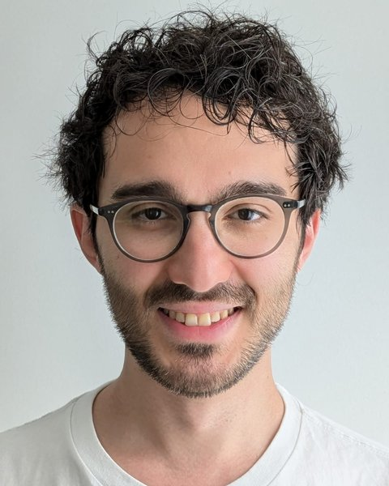

Staff Research Scientist · Gemini · Google DeepMind, London
Sahand Sharifzadeh
Building frontier multimodal and reasoning models across 12+ years of research in foundation models, computer vision, deep RL, and robotics.
I drove the co-development and validation of a key recipe used in Gemini 4 series (Argon, Carbon) and contributed to the Gemini 2 and 3 model series and Flamingo. Across Gemini Mid-Training and Thinking, my research has spanned reinforcement learning efficiency and scaling, inference-time scaling, quantization in post-training, and strategic reasoning in games. I also co-led research on self-improving VLMs.
Earlier, my research spanned looped graph transformers for iterative scene understanding (Classification by Attention, 2020), knowledge graph embeddings (PyKEEN), and deep inverse reinforcement learning for autonomous driving.

- 17,000+
- citations on Google Scholar
- 12+ yrs
- foundation models, vision, RL & robotics
- Gemini 2–4
- mid-training & thinking
- Ph.D.
- summa cum laude, LMU Munich
Recently
Gemini 4 Argon is now available to everyone, after its announcement on 30 September. I was a core member of the Gemini Mid-Training team and developed a key recipe used in the model. Google blog ↗
Game Arena: strategic LLM evaluation in competitive environments (Kaggle). Technical report on arXiv. arXiv ↗
Gemini 2.5 technical report released. arXiv ↗
Synth²: self-improving VLMs with synthetic captions and image embeddings (co-lead). arXiv ↗
Ultra-high-granularity detector simulation published in Nature Communications. Paper ↗
New essay: A Looped Transformer for Scene Understanding, Six Years Later ↗
01 · 2006 – present
Research trajectory
Twenty years, six threads: from building robots in Tehran to training Gemini in London. Each point is a project; the lines show how one led to the next.
Select a point to read about the project.
Read the trajectory as text
RL & post-training
- 2014 – 2016, 2022 Inverse RL & Autonomous Driving. Motion planning with Inverse RL and Deep Q-Networks (NeurIPS 2016 Workshop, TUM CVG); Robotic pouring via curriculum RL (PourNet, IEEE/RSJ IROS 2022); 1st Place, ACM UIST 2013 Student Innovation Contest (Cool Print).
- 2024 – 2025 Gemini Thinking (2 & 3 Series). Contributor across the Gemini 2 and 3 series; Drove research explorations on Thinking: inference-time scaling and post-training quantization.
- 2025 – 2026 Gemini Games (Game Arena). Core contributor to Gemini Games: strategic reasoning and evaluation in games (Kaggle Game Arena).
- 2025 – 2026 Gemini Mid-Training. Core member of the Gemini Mid-Training team at Google DeepMind; developed a key recipe used in Gemini 4 Argon.
Multimodal & vision–language
- 2007 GooyaSaz (Persian OCR & TTS). 1st Place Khwarizmi Youth Innovation Award (Tehran, Dec 2007): Farsi Optical Character Recognition (OCR) and Text-to-Speech software converting scanned documents into speech for blind people.
- 2019 – 2023 The Tensor Brain. The Tensor Brain: A Unified Theory of Perception, Memory, and Semantic Decoding (Neural Computation 2023 & CCN 2019).
- 2018 – 2023 Scene Graphs & Relationformer. Ph.D. at LMU Munich, thesis graded Summa Cum Laude: First-author AAAI (2021, 2022) and ICPR (2021) papers on scene graph generation & depth maps; Relationformer (ECCV 2022); InstanceFormer video segmentation (AAAI 2023); Prior-RadGraphFormer (MICCAIW 2023).
- 2021 – 2023 Flamingo VLM. Research Scientist Intern at DeepMind (Apr – Sep 2021): Flamingo visual language model for few-shot learning (NeurIPS 2022, 10,000+ citations); Do DALL-E and Flamingo Understand Each Other? (ICCV 2023).
- 2024 Synth² (Self-Improving VLMs). Co-lead & first author at Google DeepMind: self-improving VLMs trained with synthetic captions and image embeddings.
Computer vision
- 2014 – 2017 Stereo 3D Reconstruction. Variational stereo image 3D reconstruction for automatic determination of pruning mass in grapevine management and breeding (Australian Journal of Grape and Wine Research, 2017; TUM Computer Vision Group with Prof. Daniel Cremers).
- 2015 – 2016 Medical Registration (MRFs). MRF-based image registration for intraoperative ultrasound brain-shift compensation towards robotic image-based neurosurgery (TUM CAMP, 2015–2016; 3rd HBP Workshop).
Knowledge graph embeddings
- 2020 – 2021 Knowledge Graphs (PyKEEN). Co-author of: The PyKEEN knowledge graph embedding library (JMLR 2021); MemeGraphs (ICDAR 2023); Unsupervised KG-to-text generation (EMNLP 2020).
- 2020 – 2021 Large-scale KGE Evaluation (TPAMI). Co-author of “Bringing Light Into the Dark”, a large-scale evaluation of knowledge graph embedding models under a unified framework (IEEE TPAMI 2021).
AI for Science
- 2020, 2024 Genomics & Protein QA. MutLX platform for clone-specific genomic mutation discovery (eLife 2020); PQA: Zero-Shot Protein Question Answering for Free-Form Scientific Enquiry with Large Language Models (2024).
- 2023 – 2024 Particle Detector Simulation. Ultra-High-Granularity Detector Simulation with Intra-Event Aware Generative Adversarial Network and Self-Supervised Relational Reasoning (Nature Communications 2024).
Robotics
- 2006 Guard Robot (Safety Robotics). 1st Place Khwarizmi Youth Innovation Award (Tehran, Dec 2006): Design and build of an autonomous mobile robot for industrial safety applications.
- 2011 – 2013 @Home Service Robot & Kinect HCI. Technical Team Lead of the Sharif @Home RoboCup Team: 1st Place AUTCup 2012, RobX & SUT TDP papers, gesture & speech recognition; Research Assistant at the NUS HCI Lab (2011): 3D Kinect hand gesture alignment.
02 · Career
Experience
-
Staff Research Scientist — Gemini Team Google DeepMind
- Gemini Mid-Training: Core member of the Gemini Mid-Training team; developed a key recipe used in Gemini 4 Argon.
- Gemini Thinking: Contributor across the Gemini 2 and 3 series; drove research explorations on Thinking (inference-time scaling and post-training quantization).
- Gemini Games: Core contributor; strategic reasoning and evaluation in games (Kaggle Game Arena).
- Synth²: Co-lead; self-improving VLMs trained with synthetic captions and image embeddings.
-
Research Scientist Intern DeepMind
Contributed to Flamingo, a visual language model for few-shot multimodal learning (NeurIPS 2022, 10,000+ citations).
-
Doctoral Researcher LMU Munich
Scene graph generation, Relationformer, The Tensor Brain, and co-author of the PyKEEN knowledge graph embedding library—with publications in Nature Communications, NeurIPS, ICCV, ECCV, AAAI, IEEE TPAMI, JMLR, eLife, EMNLP, and Neural Computation.
-
Research and Teaching Assistant Technical University of Munich (TUM)
- Autonomous Driving & Computer Vision (Computer Vision Group, Oct 2013 – Apr 2017): Motion planning with inverse RL and deep Q-networks; stereo 3D reconstruction for grapevine management; CUDA Programming TA (“GPU Programming for Computer Vision”, Sep 2014).
- Medical Imaging (Computer Aided Medical Procedures Lab — CAMP, May 2015 – Mar 2016): MRF-based image registration for ultrasound brain-shift compensation in neurosurgery.
-
Technical Team Lead — @Home RoboCup Team Sharif University of Technology
Design and build of a service robot; gesture and speech recognition.
-
Research Assistant — HCI Lab National University of Singapore (NUS)
Hand gesture recognition from Kinect data using sequence alignment.


03 · Foundation
Education
-
Ph.D. in Computer Science (Artificial Intelligence)
Ludwig Maximilian University of Munich (LMU), Germany
Thesis: Summa Cum Laude (0.7 — The Highest Distinction)
Thesis: On the Importance of Symbol Grounding and Top-Down Processes in Computer Vision
Supervisor: Prof. Volker Tresp -
M.Sc. in Computer Science
Technical University of Munich (TUM), Germany
Thesis: High Distinction (1.1)
Major: Computer Vision, Robotics & AI
Supervisors: Prof. Daniel Cremers, Prof. Rudolph Triebel -
B.Sc. in Computer Science
Shahid Beheshti University, Iran
Thesis: High Distinction (20/20)Top 3 of Class
Thesis Supervisor: Prof. Shengdong Zhao (National University of Singapore)
04 · Recorded
Talks & lectures
 2023 · Google DeepMind
2023 · Google DeepMind
Transformers — Mediterranean Machine Learning (M2L) Summer School
Invited summer school lecture covering Transformer architectures, attention mechanisms, and multimodal foundation models.
 2021 · LMU Munich
2021 · LMU Munich
Classification by Attention: Scene Graph Classification with Prior Knowledge
Advanced School of Computing (ASoC 2021, IPM) — talk on symbol grounding, attention mechanisms, and prior-knowledge scene graph generation (AAAI 2021).
 2016 · TUM Computer Vision Group
2016 · TUM Computer Vision Group
Learning to Drive using Deep Inverse Reinforcement Learning
Human Brain Project School of Future Computing — presentation on deep inverse RL and Deep Q-Networks for autonomous driving.
 2016 · TUM CAMP Lab
2016 · TUM CAMP Lab
Intra-operative Ultrasound-Based Brain-Shift Compensation Towards Robotic Neurosurgery
3rd Human Brain Project Education Workshop on Future Computing (Manchester) — MRF-based medical image registration.
05 · Papers
Publications
A curated list. The complete, up-to-date record is on Google Scholar.
-
2026Technical Report · arXivKaggle Game Arena ↗
Game Arena: Strategic LLM Evaluation in Competitive Environments
-
2025Technical Report
Gemini 2.5: Pushing the Frontier with Advanced Reasoning, Multimodality, Long Context, and Next Generation Agentic Capabilities
-
2024arXiv preprintFirst Author & Co-Lead
Synth²: Boosting Visual-Language Models with Synthetic Captions and Image Embeddings
-
2024Nature Communications
Ultra-High-Granularity Detector Simulation with Intra-Event Aware Generative Adversarial Network and Self-Supervised Relational Reasoning
-
2024arXiv preprint
PQA: Zero-Shot Protein Question Answering for Free-Form Scientific Enquiry with Large Language Models
-
2023AAAI
InstanceFormer: An Online Video Instance Segmentation Framework
-
2023ICCV
Do DALL-E and Flamingo Understand Each Other?
-
2023Neural Computation
The Tensor Brain: A Unified Theory of Perception, Memory, and Semantic Decoding
-
2023ICDAR
MemeGraphs: Linking Memes to Knowledge Graphs
-
2023MICCAI Workshop (GRAIL)
Prior-RadGraphFormer: A Prior-Knowledge-Enhanced Transformer for Generating Radiology Graphs from X-Rays
-
2022NeurIPS10,000+ Citations
Flamingo: A Visual Language Model for Few-Shot Learning
-
2022ECCV
Relationformer: A Unified Framework for Image-to-Graph Generation
-
2022AAAIFirst Author
Improving Scene Graph Classification by Exploiting Knowledge from Texts
-
2022IEEE/RSJ IROS
PourNet: Robust Robotic Pouring Through Curriculum and Curiosity-Based Reinforcement Learning
-
2022Ph.D. Dissertation · LMU MunichSumma Cum Laude
On the Importance of Symbol Grounding and Top-Down Processes in Computer Vision
-
2021AAAIFirst Author
Classification by Attention: Scene Graph Classification with Prior Knowledge
-
2021ICPRFirst Author
Improving Visual Relation Detection using Depth Maps
-
2021IEEE TPAMI
Bringing Light Into the Dark: A Large-scale Evaluation of Knowledge Graph Embedding Models Under a Unified Framework
-
2021JMLR
PyKEEN 1.0: A Python Library for Training and Evaluating Knowledge Graph Embeddings
-
2020EMNLP
An Unsupervised Joint System for Text Generation from Knowledge Graphs and Semantic Parsing
-
2020eLife
A Highly Accurate Platform for Clone-Specific Mutation Discovery Enables the Study of Active Mutational Processes
-
2019CCN
A Model for Perception and Memory
-
2017Australian Journal of Grape and Wine ResearchStereo 3D Reconstruction
Automatic Image-Based Determination of Pruning Mass as a Determinant for Yield Potential in Grapevine Management and Breeding
-
2016NeurIPS Workshop on Deep Learning for Action and InteractionFirst Author
Learning to Drive using Inverse Reinforcement Learning and Deep Q-Networks
-
20163rd Human Brain Project Education Workshop on Future ComputingFirst Author
Intra-operative Ultrasound-Based Brain-Shift Compensation Towards Robotic Image-Based Neurosurgery
-
2012–2013AUTCup & Khwarizmi International Robotic Competitions (@Home League)
RobX & SUT Service Delivery Robots League Team Description Papers
No publications match.
06 · Recognition
Honors & awards
- 2016
Human Brain Project Workshop on Future Computing
European Commission Certification & Speaker (Manchester & Graz).
- 2013 – 2016
TUM Scholarship for International Students (Merit-Based)
Awarded three times by Technische Universität München based on academic achievement.
- 2013
1st Place — ACM UIST Student Innovation Contest
Ranked 1st in the Usefulness Category (Team TUM IN), Cool Print Project.
- 2012
1st Place — International AUTCup Robotic Competition (@Home League)
Team Sharif University of Technology (SUT).
- 2009
12th Place — ACM ICPC Asia Regional Contest
ACM International Collegiate Programming Contest, Asia Regional, Tehran.
- 2006 – 2007
1st Place — Khwarizmi Youth Innovation Award (Tehran)
2007: 1st Place for the GooyaSaz Project — Persian OCR and text-to-speech software for blind people.
2006: 1st Place for the Guard Robot Project — mobile robot for industrial safety applications.
Languages Persian · English · Azerbaijani · German · Turkish